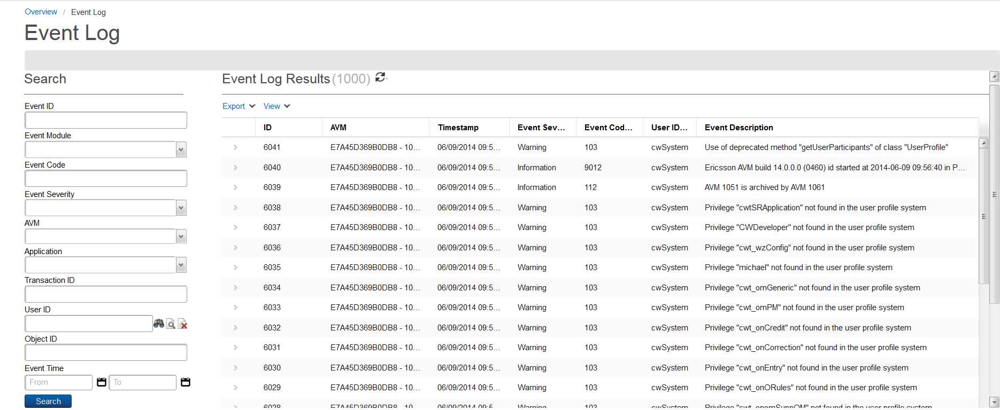

The Event Log report displays a list of messages logged by the Catalog Administration. To access the Event Log, click Tools > Event Log from the menu bar.
The Event Log report contains the following fields:
| Field | Description |
|---|---|
| ID | This field denotes the numeric event-message ID. |
| AVM | This field contains the node set in the Configuration application. |
| Timestamp | This field indicates the date and time when the message was logged. |
| Event Severity | This field represents the level of importance. |
| Event Code | This field denotes the internal code that identifying the type of message. |
| User ID | This field contains the ID of the user who received the message. |
| Event Description | This field indicates the description of the message. |
You can perform the following tasks from the Event Log page:
To generate an Event Log report, do the following:
| Criterion | Description |
|---|---|
| Event ID | This field denotes the numeric event message's identifier. |
| Event Module | This field indicates the message's event source. Click the field's drop-down menu and select the event module that you want. |
| Event Code | This field represents the Internal code identifying the type of message. |
| Event Severity | This field contains the level of importance. |
| AVM | This field indicates the node set in the Configuration application. Click the field's drop-down menu and select the node identifier from the list. |
| Application | This field denotes the application source of the message. |
| Transaction ID | This field represents the ID that is attached to a grouping for the same request type or a process activity for a process engine. |
| User ID | This field contains the ID of the user who received the message. You can click the following buttons:
|
| Object ID | This field denotes the object code that identifies the message type. |
| Event Time | This field allows you to specify the time and date when the event message was logged. There are two fields that you can specify:
|
To view the details of a specific transaction, complete these steps: